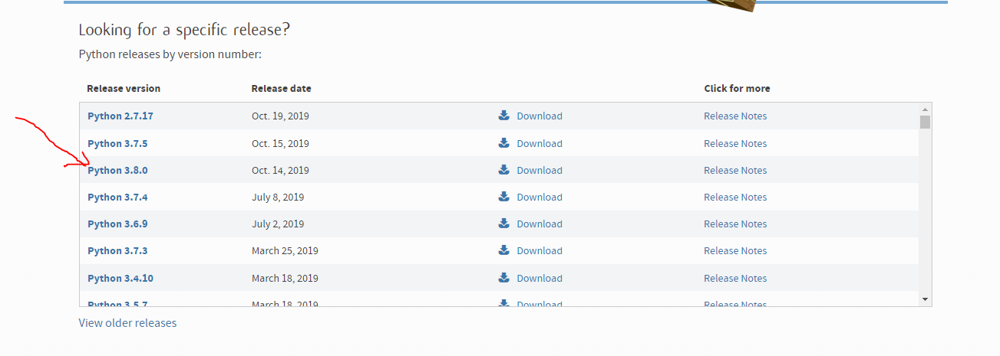
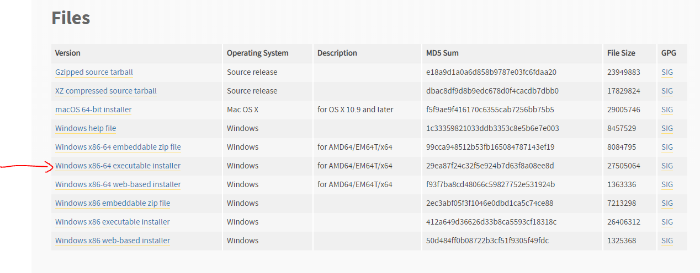
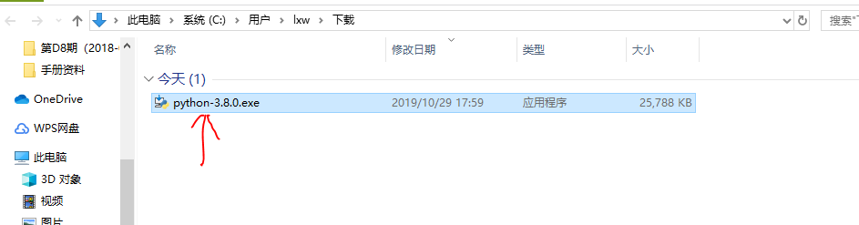
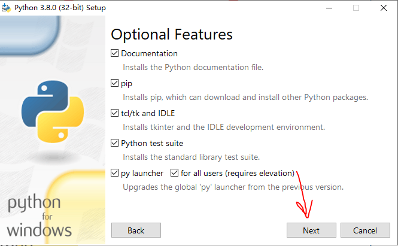
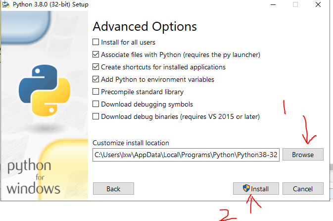
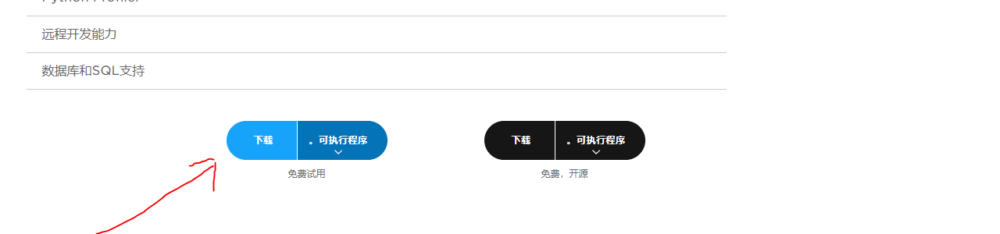
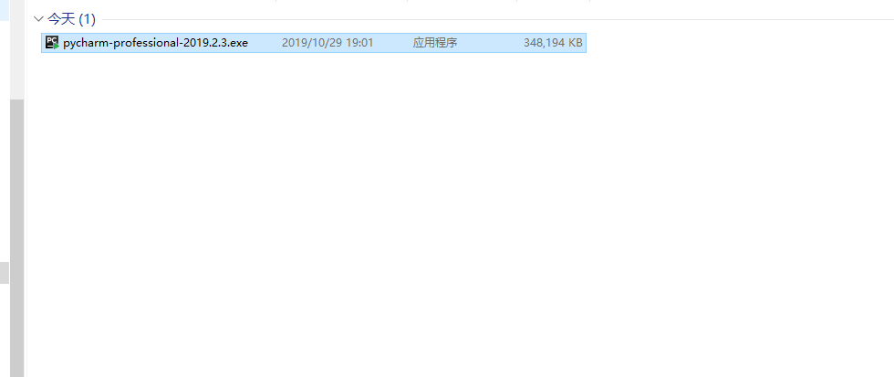
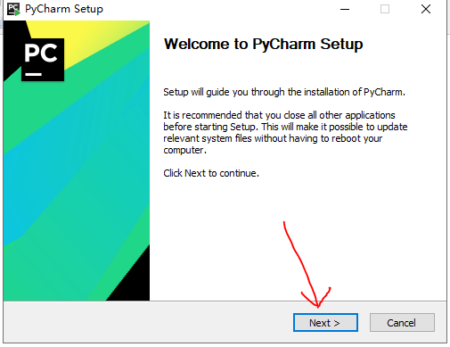

原文连接:https://www.cnblogs.com/lxw-88/p/11760768.html
一、安装Python解释器
Windows下 Python开发环境搭建
1、官网下载：
https://www.python.org/downloads/
2、选择对应的版本


3、双击运行

4、选择 "自定义安装" 及 "添加环境变量"

当然如果你这里不选择添加环境变量，也可以手动添加；
步骤： 桌面上选择 ‘计算机’ -> 右键 选择 "属性" -> 点击 “高级系统设置” -> ‘高级’ -> ‘环境变量’ -> 系统环境 下的Path 下添加 python.exe 文件的安装路径
5、选择默认 "next(下一步)"

6、可修改安装路径

7、测试安装是否成功
win图标 + R -> 输入 cmd 回车 -> doc 命令界面下输入 python -V -> 能看到版本号则表示安装成功
直接输入 python 回车 则进入测试编辑模式

Linux 下 Python开发环境搭建
二、 安装IDE（PyCharm）
1、官网下载：https://www.jetbrains.com/pycharm/
一定要选择专业版


2、双击运行

3、选择安装路径

4、安装选项

5、进入“选择开始菜单”界面，可以重新取一个名字，下一步

6、进入“安装过程”界面，等一会儿，安装完后，下一步

7、选择“现在重启”还是“稍后重启”，我选“稍后重启”